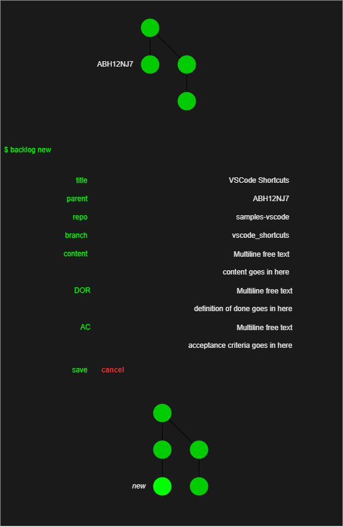
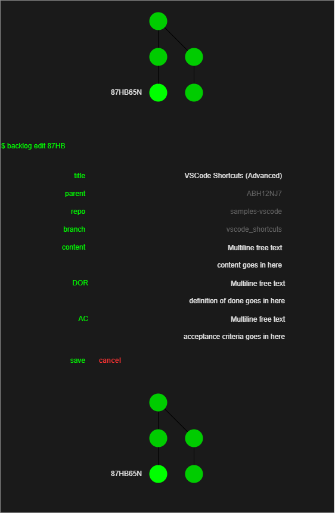
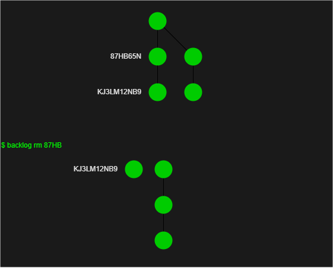
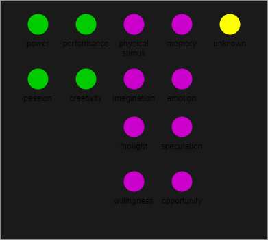
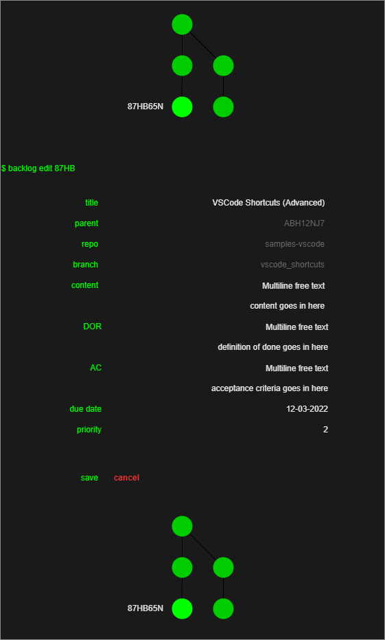
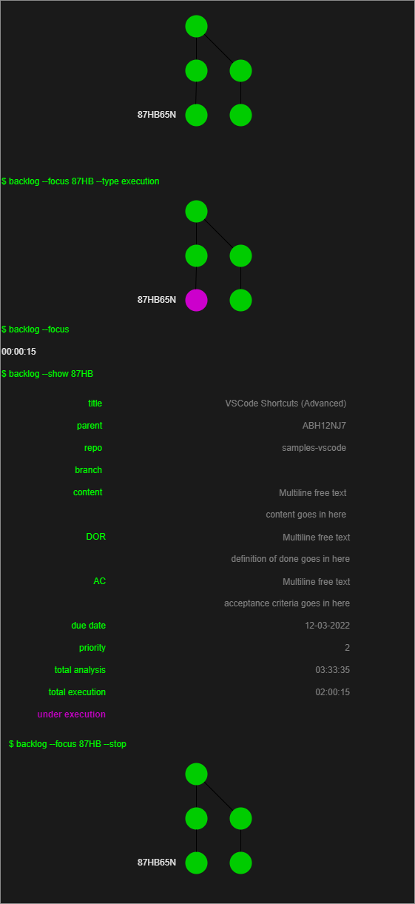
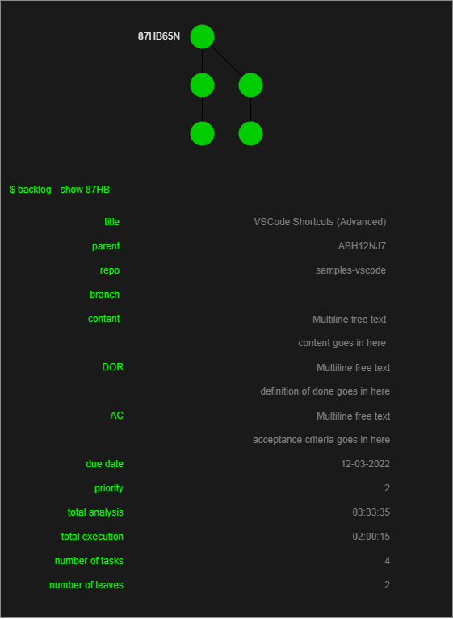
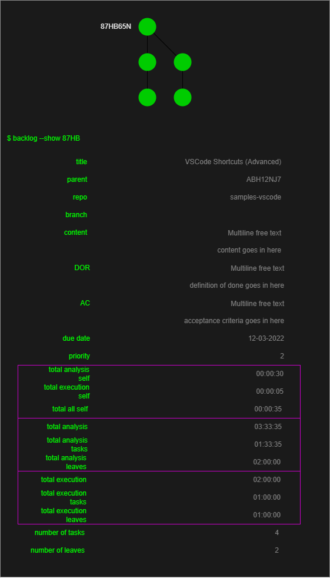

Problem, Solution and Behaviour Analysis#
Problem Statement#
We’re trying to solve the following problems which seem to be related:
Tracking TODO tasks#
Sometimes I forget to track tasks and I’m only reminded wither when it’s too late, or when there are already consequences to my negligence, say fines with interest. The knowledge that I may be forgetting something is always with me and it generates permanently an unconfortable level of anxiety, or it hinders a feeling of safety from settling in.
Understanding the need/the context for each task#
Sometimes I’m working on something and I can’t precise exactly why I’m working on it. That unawareness makes the process of completing the task much less productive for many reasons, one of them being that I may go into too much detail, because I have lost the awareness of the actual requirements for the task.
Prioritize tasks#
Mostly I tend to work on the tasks that give me great pleasure and continuously postpone working on tasks that don’t give as much joy, chores like paying taxes, etc.- I believe because I lack the context on why to execute those tasks. But it would be great to know which tasks need to be completed when, or which ones are more important - by some objective measurement - so I could better navigate the backlog or the tasks I feel like working on.
Track progress of tasks#
Sometimes I’m rather clueless on the progress of a task because I began working on sub tasks, etc. It would be great to get a measurement of how much a task is closed to become completed, evaluating from its subtasks.
Solution and Behaviour Analysis#
A network graph with nodes representing tasks and edges representing to which tasks a task relates to, should:
provide a way to track the TODO tasks by having nodes persisted and representing the tasks;
it should provide a way to understanding the context of each task by displaying the edges between nodes (recursively, it will show how that task is contributing to something the agent can relate to primarily);
it should provide a way to prioritize tasks by checking the timeline for each node;
it should provide a way to track the progress of tasks by seeing how many child tasks/nodes have been finished;
{kind=link}
Tracking TODO tasks doc#
To enable the tracking of TODO tasks, it should be possible to perform the following actions on the nodes:
BEHAVIOUR 1: SPEC
Add new node (nodes don’t necessarily need to have a parent just yet) with a template for:
title: the title of the task
content: a description of the task
acceptance-criteria: the criteria for the task to be considered completed
dor-definition-of-ready: what must be in place for the task to be ready to be worked on
list-of-parents: the tasks this task is related to, or the tasks this task helps accomplishing
list-of-children: the tasks related to this, or the tasks that help accomplishing this task
{kind=link}
BEHAVIOUR 1: TEST SPEC
title: verify that the title of the task is persisted
content: verify that the content of the task is persisted
acceptance-criteria: verify that the acceptance criteria of the task is persisted
dor-definition-of-ready: verify that the DOR of the task is persisted
list-of-parents: verify that the list of parents of the task is persisted
list-of-children: verify that the list of children of the task is persisted
BEHAVIOUR 2: SPEC
Edit node properties
title
content
acceptance-criteria
dor-definition-of-ready
{kind=link}
BEHAVIOUR 2: TEST SPEC
title: verify that the edited title of the task is persisted
content: verify that the edited content of the task is persisted
acceptance-criteria: verify that the edited acceptance criteria of the task is persisted
dor-definition-of-ready: verify that the edited DOR of the task is persisted
BEHAVIOUR 3: SPEC
Remove node from backlog network graph. It is OK at this point to wipe it entirely and not be able to recover it. Make all the child nodes orphan.
{kind=link}
BEHAVIOUR 3: TEST SPEC
verify that the node was removed
verify that the node’s children are now orphans
verify that the node’s children haven’t lost any nodes
BEHAVIOUR 4: SPEC
Have intuitive visualization of the backlog nodes.
BEHAVIOUR 4: TEST SPEC
verify that the chosen visualization renders successfully
vefify that the chosen visualization is intuitive
Understanding the need/the context for each task doc#
Create a first set of primary nodes representing what the agent likes/wants to do with his life. All subsequent nodes should derive from these, or from a child of these - recursively.
BEHAVIOUR 5: SPEC
Items derive from:
creativity
passion
performance
powerDiscarded items derive from:
physical-stimuli
memory: past reality
imagination: alternate reality
emotion: strong physical sensation prompting action (fear, anger, etc.)
thought: new perspective on reality, typically a solution or hint
speculation: a speculation on the cause/consequences of an event that happened in reality
willingness: a willingness prompting action
opportunity: opportunity to decrease the work required to accomplish a task
unknown: any other categorieThese items should be made available in the network from the start. All new items should fit into one of these categories. Otherwise, it should be possible to add a new primary node.
{kind=link}
BEHAVIOUR 5: TEST SPEC
All these nodes need to be available in the network from the start:
creativity
passion
performance
power
physical-stimuli
memory
imagination
emotion
thought
speculation
willingness
opportunity
unknown
Prioritize tasks doc#
BEHAVIOUR 6: SPEC
Each node should have the following properties:
due-date: the date the task is due to be completed
priority: a value that should help with prioritization. It is to be discussed what this value varies in function of. E.g.: In the working context, it varies based on the customer needs, meaning the customer decides the prioritization.
{kind=link}
BEHAVIOUR 6: TEST SPEC
due-date: the due date should be persisted
due-date: the due date should be editable
priority: the priority should be persisted
priority: the priority should be editable
Track progress of tasks doc#
BEHAVIOUR 7: SPEC
Each node should have the following properties:
focus-toggle: a toggle to indicate whether the task is being engaged with or not. A task can be engaged with either fromanalysisor from what the task requires to be completed.Only one task can be engaged with at a time. The previous engaged task becomes unengaged if a new one is engaged with.
A time counter initiates when a task is engaged with and it stops when the task is not engaged with. There’s an accumulator variable holding the total time of focus time. *
focus-type: the type of focus the task is being engaged with. It can be eitheranalysisorexecution.analysismeans the task is being analyzed before being executed. It can be interesting to understand how much time goes into understanding a problem and how much goes into solving it.
{kind=link}
BEHAVIOUR 7: TEST SPEC
Each node should have the following properties:
verify that the
focus-type==analysissaves the time spent in the accumulator variablefocus_type_analysisverify that the
focus-type==executionsaves the time spent in the accumulator variablefocus_type_executionverify that the
focus-togglestops and restarts the counter.verify that the
focus-togglethe accumulator persists the total time of focus time.verify that the
focus-togglestops the focus toggle on a different task and that that different task focus time accumulator is duly updated.
BEHAVIOUR 8: SPEC
All tasks are actionable tasks because all tasks can at least be
analysed. It may be interesting to know: *number-of-subtasks: the total number of child tasks *number-of-leaves: the total number of child tasks that are leaves
{kind=link}
BEHAVIOUR 8: TEST SPEC
Each node should have the following properties:
verify that the
number-of-subtasksis correctverify that the
number-of-subtasksis correct after a task is removedverify that the
number-of-leavesis correctverify that the
number-of-leavesis correct after a task is removed
BEHAVIOUR 9: SPEC
The
total-time-spent-on-subtasksprovides a metric that can help understanding how much work has been put into this task. It is still uncertain how this help understanding the progress of the task, but it is a good start. Thetotal-time-spent-on-subtasksrefers either to:
the task itself;
or to the total sum of the tree taking the task as root;
or to the total sum of the leaves of the tree taking the task as root;
total-time-spent-on-task==analysis: the total time spent on the task analyzing
total-time-spent-on-task==execution: the total time spent on the task executing
total-time-spent-on-task: the total time spent on the task
total-time-spent-on-subtasks==analysis: the total time spent on all tasks analyzing
total-time-spent-on-subtasks==execution: the total time spent on all tasks executing
total-time-spent-on-subtasks: the total time spent on all tasks
total-time-spent-on-leaves==analysis: the total time spent on all leaves analyzing
total-time-spent-on-leaves==execution: the total time spent on all leaves executing
total-time-spent-on-leaves: the total time spent on all leaves
{kind=link}
BEHAVIOUR 9: TEST SPEC
Each node should have the following properties:
verify that
total-time-spent-on-task==analysisis correctverify that
total-time-spent-on-task==executionis correctverify that
total-time-spent-on-taskis correctverify that
total-time-spent-on-subtasks==analysisis correctverify that
total-time-spent-on-subtasks==executionis correctverify that
total-time-spent-on-subtasksis correctverify that
total-time-spent-on-leaves==analysisis correctverify that
total-time-spent-on-leaves==executionis correctverify that
total-time-spent-on-leavesis correctverify that
total-time-spent-on-subtasks==analysisis updated after removing any subtaskverify that
total-time-spent-on-subtasks==executionis updated after removing any subtaskverify that
total-time-spent-on-subtasksis updated after removing any subtaskverify that
total-time-spent-on-leaves==analysisis updated after removing any leaveverify that
total-time-spent-on-leaves==executionis updated after removing any leaveverify that
total-time-spent-on-leavesis updated after removing any leave
Solution Extra behaviours#
To each node:
attached-files: Any attached files to the node, typically related to the node content, like images, diagrams, etc.estimated-effort: How much work this task is expected to require. It is required to come up with an unit forwork.date-of-creation: the date of creation of the nodedate-of-completion: the date of completion of the node- edit:
list-of-parentslist-of-children
get repo of parent node (if any) as to know from which branch to branch
on removing node, decide what to do with the child nodes.
focus-toggle: depends on user commitment for now, but it can be endlessly automated, this will be a roll-over feature, the more automated, the more effective. See the pomodoro technique.